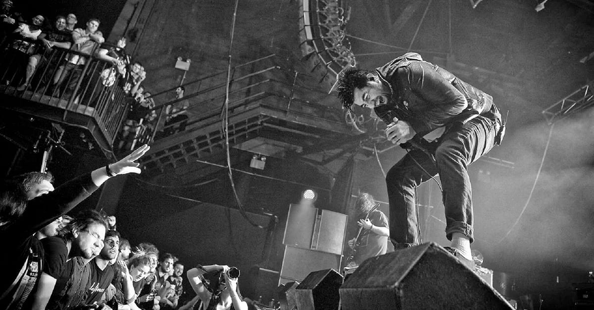
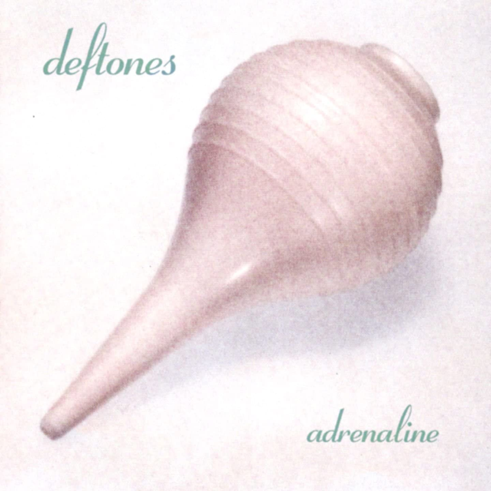
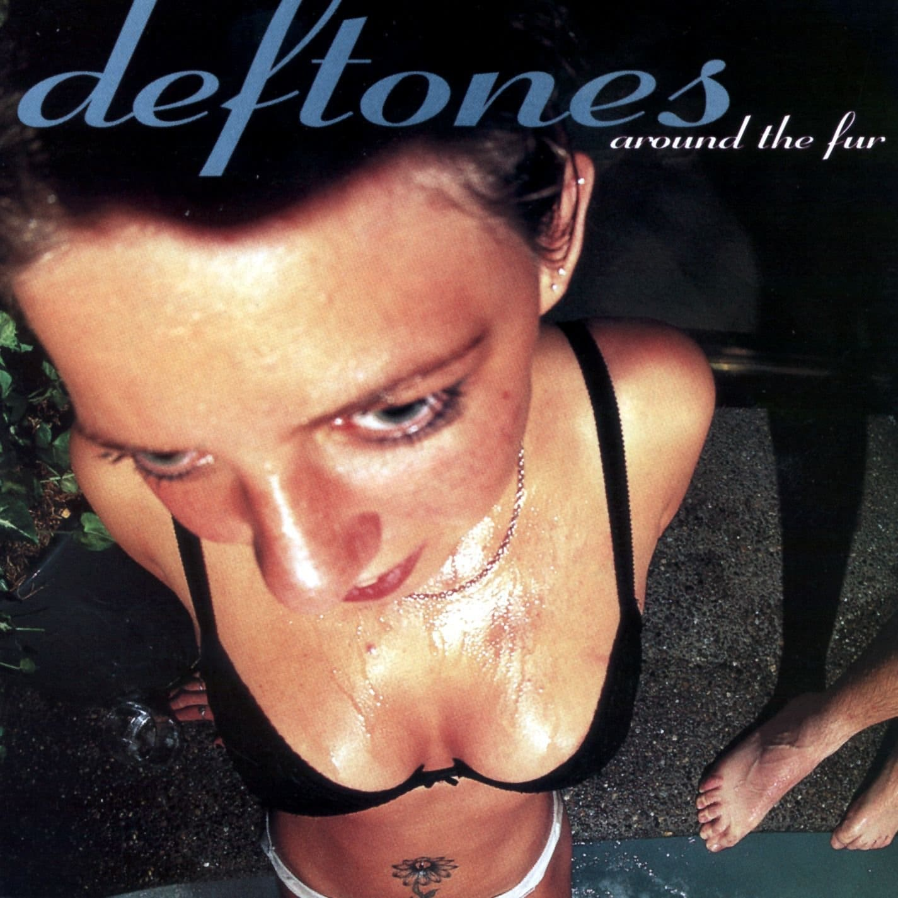
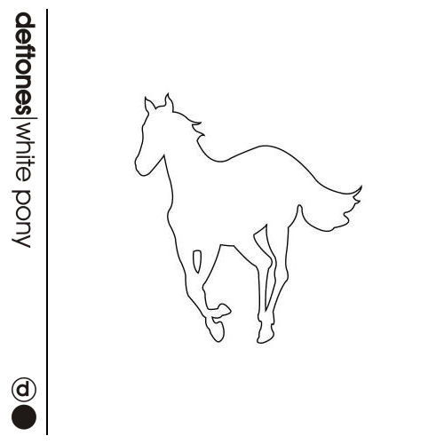
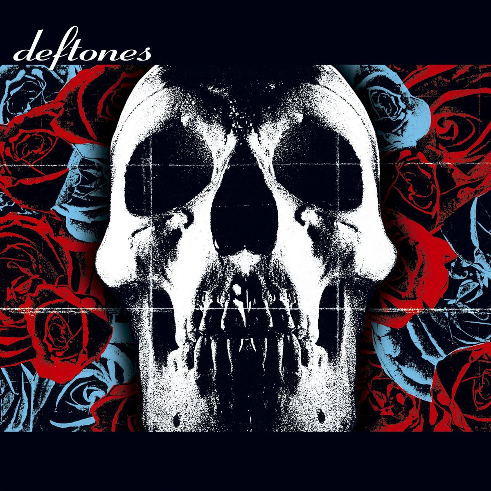
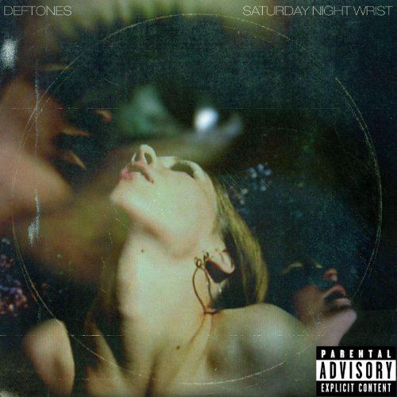
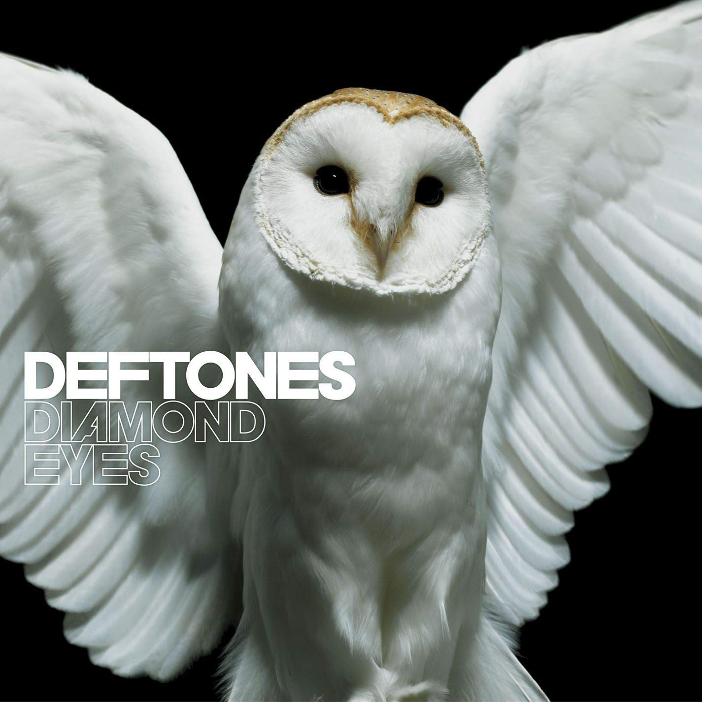
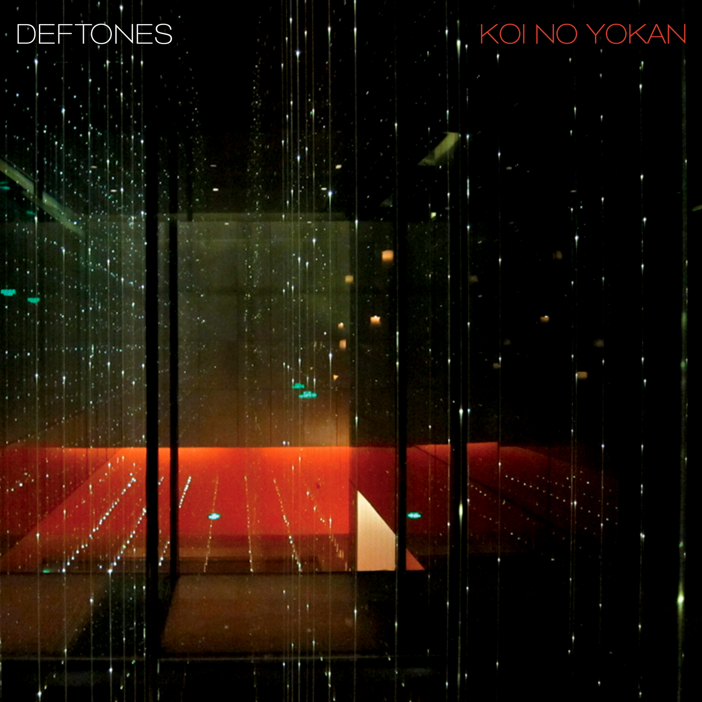
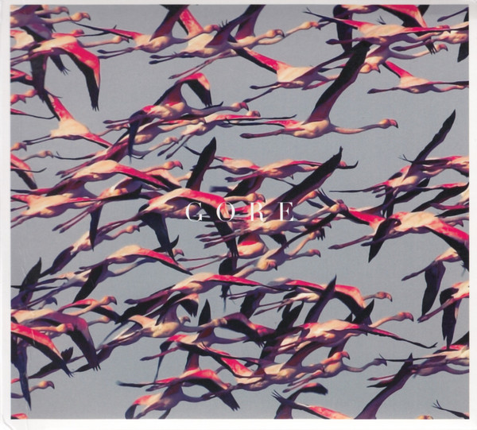
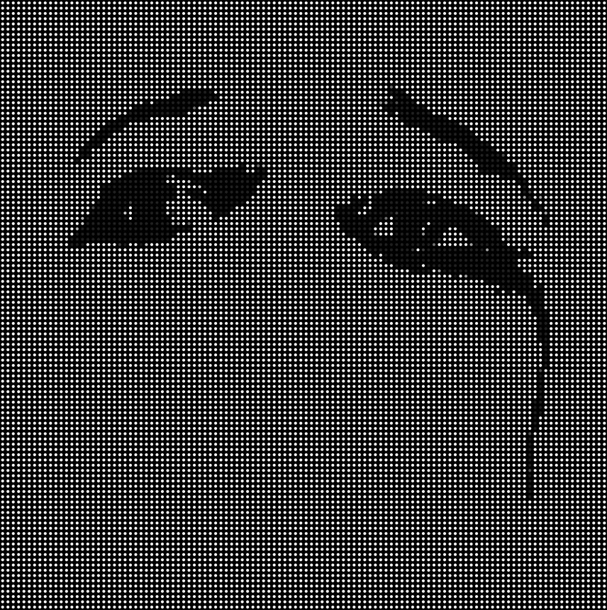

DISCOGRAFIA
DEFTONES
El grupo se formó en Sacramento en 1988 cuando los estudiantes de secundaria Stephen Carpenter, Abraham Cunningham y Camilo "Chino" Moreno empezaron a tocar juntos.5 Cuando Carpenter tenía 15 años de edad, fue atropellado por un coche mientras practicaba skateboarding. Esto lo dejó confinado a una silla de ruedas durante varios meses. Fue en este punto que empezó a tocar la guitarra, escuchando a bandas como Anthrax, Stormtroopers of Death y Metallica.6 Se ha informado que el conductor pagó a Carpenter una liquidación en efectivo que permitió a la banda la compra de equipo,678 pero el baterista Abe Cunningham comentó en una entrevista que este era "un mito acerca de cómo se inició nuestra banda".9 Entonces, Deftones empezó a tocar en locales.5 Después de probar con unos cuantos bajistas, encontraron a Chi Cheng.5 Aunque el grupo al principio se basaban mucho en el heavy metal, a principios de los 90 llevaron su sonido un poco más lejos inspirados en bandas como Duran Duran, The Cure etc. Una demo de 13 canciones llamada (Like) Linus, es lo único que tenían antes de firmar con la discográfica Maverick Records.

Adrenaline (1994–1996)
La preproducción del primer trabajo propio de Deftones, comenzó en el otoño de 1994. El productor elegido para dirigir las sesiones fue Terry Date, quien en ese momento era bien conocido por haber producido álbumes para Pantera, White Zombie, y Soundgarden. Date aportó varias ideas para mejorar la estructura sonora. La banda adoptó su estilo y lo tuvo como productor para sus siguientes tres discos. Adrenaline fue realizado el 3 de octubre de 1995. El disco no fue un éxito inmediato, así que la banda se hizo una base de fanes tocando en pequeños locales o como teloneros de grupos como Ozzy Osbourne, L7. Cuando las ventas de Adrenaline estaban llegando a las 200.000 copias, los fanes ya esperaban su segundo disco, Around The Fur, que salió a la venta en octubre de 1997. Una crítica de Adrenaline remarcaba a Cunningham como un "baterista sorprendentemente sofisticado" y agregaba que "a diferencia de muchos de sus contemporáneos, los Deftones son muy controlados inclusive en medio del caos.

Around the Fur (1997–1999)
Around the Fur nuevamente contó con la producción de Terry Date y fue grabado en el Studio X de Seattle. Lanzado el 28 de octubre de 1997, el álbum contó con la colaboración del cantante Max Cavalera (fundador y líder de Sepultura) en Headup," un tributo a su hijastro fallecido Dana Wells. La canción inspiró a Cavalera para crear Soulfly, una banda dedicada a Wells. Otra colaboración en el álbum fue la de Annalynn, la esposa de Cunningham, quien hizo los coros femeninos en "Mx". "My Own Summer (Shove It)" y "Be Quiet and Drive (Far Away)" fueron éxitos en el circuito alternativo. Dos años más tarde, "My Own Summer (Shove It)" fue elegido para formar parte de la banda de sonido de The Matrix. En 1999, se convirtió en disco de oro tras vender 500.000 copias en los Estados Unidos.1 En septiembre de 2004 el disco llevaba vendidas 872.006 copias.

White Pony (2000–2002)
El 20 de junio de 2000, la banda lanza su tercer álbum de estudio, White Pony. Al igual que los dos discos anteriores fue producido por Terry Date, pero esta vez en el estudio propio de la banda en Sausalito, California. Debutó como No. 3 en la lista de Billboard de Estados Unidos, vendiendo 177.000 copias.12 Es visto como el disco más maduro realizado por la banda. Los hits incluidos fueron "Change (In the House of Flies)" y "Digital Bath." Delgado se convirtió en miembro oficial de la banda haciendo importantes contribuciones para la creación de la atmósfera del álbum. Las críticas fueron sorprendentemente positivas, elogiando la sofisticación de Moreno como liricista y la capacidad experimentativa del grupo: el frágil "Teenager," por ejemplo, incorporó elementos del glitch y del trip hop, con programaciones aportadas por DJ Crook, amigo y compañero del proyecto paralelo de Moreno conocido como Team Sleep ("Teenager" fue originalmente una canción de Team Sleep). Maynard James Keenan, cantante de Tool y A Perfect Circle, participa en "Passenger," y Rodleen Getsic hace la segunda voz en "Knife Party". Una edición limitada de 50.000 copias impresas en rojo y negro fueron lanzadas con el bonus track "The Boy's Republic." La banda regrabó "Back To School (Mini Maggit)," una versión alternativa cercana al rap-metal de la canción "Pink Maggit,". La canción fue ubicada esta vez como introducción del disco, el cual fue re-lanzado en 3 de octubre de 2000. Con esto la banda expresaba su resentimiento con Maverick por la constante falta de fe del sello en su arte. Moreno ha dicho que odia esa canción y que accedió a grabarla para demostrarle a su sello cuan estúpidamente fácil es escribir un éxito. White Pony alcanzó el estatus de multiplatino,1 así como un Grammy en 2001 en la categoría mejor interpretación de metal por "Elite".13 Ha vendido más de un millón de copias.12 En entrevistas, Moreno ha dicho que las letras fueron deliberadamente mal-impresas (censuradas) para enmascarar ciertas vulgaridades. Por ejemplo, al comienzo de "Feiticeira", la letra escrita dice "Stop I'm drunk" cuando se escucha que Chino claramente canta "Fuck I'm drunk." En la canción "Street Carp," se puede leer "Now take it home and have fun with it", cuando de hecho Moreno canta "Now take it home and fuck with it." Similarmente, en "Change (In the House of Flies)," en el libro se lee "Give you the lung, blow me away," cuando de hecho se canta "Give you the gun, blow me away".

Deftones - Homonimo (2003–2005)
Deftones fue lanzado el 20 de mayo de 2003. Vendió 167.000 copias en su primera semana y permaneció en el top 100 de la Billboard por 9 semanas de la mano de su primer sencillo "Minerva". Luego, la banda filmó un vídeo para su segundo sencillo "Hexagram", con sus fanes viéndolos tocar en un skatepark en Simi Valley, California. La banda hizo un video para la canción "Bloody Cape", pero no fue lanzado para la televisión y solo estuvo disponible en el sitio de la banda por un día. Actualmente se lo puede encontrar en el DVD incluido en el B-Sides & Rarities y en Youtube. El álbum presenta un carácter más pesado y agresivo que su predecesor White Pony, esto de acuerdo con los miembros de la banda fue debido a las presiones profesionales y a los problemas personales por los que varios miembros de la banda estaban pasando.14 Adicionalmente, para este disco, Delgado toca el sintetizador, teclado y el sampler en lugar de sus tornamesas. Este es el segundo disco en el que Chino Moreno es acreditado como guitarrista de la banda. En 2004 participaron en el MTV Icon de The Cure interpretando "If Only Tonight We Could Sleep". B-Sides & Rarities fue lanzado en 4 de octubre de 2005. El recopilatorio incluye varias "caras-B" y versiones de artistas como Jawbox, Cocteau Twins, Lynyrd Skynyrd, Helmet, Sade, The Cure, The Smiths y Duran Duran, mientras que el DVD contiene un "detrás de cámaras" de todos los vídeos que realizó la banda.

Saturday Night Wrist (2006–2007)
El álbum de la banda titulado Saturday Night Wrist, fue lanzado en 31 de octubre de 2006. Debutó en el puesto número 10 de la lista de éxitos Billboard de Estados Unidos alcanzando ventas de solo 76.000 copias, una disminución significativa en relación con sus dos lanzamientos previos. La banda comenzó a componer después de terminar su gira de 2003 y luego de intentar trabajar en su estudio durante un tiempo. Alquilaron la casa de Malibu donde Incubus grabó Morning View. Allí grabaron varios demos, y tras entrevistarse con varios productores, optaron por grabar con Bob Ezrin en Connecticut en lugar de trabajar con su productor de tantos años Terry Date. Pese a que muchas sesiones de grabación resultaron innovadoras, nuevamente se encontraron estancados. Las sesiones se prorrogaron más de lo esperado y tras cuatro meses debieron volver a Sacramento. Finalmente, en abril la banda terminó la grabación del disco, esta vez con Shaun Lopez como productor y participaciones de Annie Hardy de Giant Drag en la canción 'Pink Cell Phone' y Serj Tankian de System of a Down en la canción 'Mein.' El primer sencillo del álbum fue «Hole in the Earth» y su vídeo fue dirigido por Brian Lazzaro.

Diamond Eyes (2010–2011)
Diamond Eyes es la sexta producción musical de Deftones cuya fecha de lanzamiento corresponde al 4 de mayo de 2010. La banda reemplazó temporalmente al bajista Chi Cheng por Sergio Vega, músico que estuvo colaborando en una ocasión anterior. El primer sencillo, que lleva por nombre "Rocket Skates", fue lanzado el 23 de febrero de 2010 y estuvo disponible durante 24 horas para su descarga gratuita a través del sitio oficial. El segundo sencillo "Diamond Eyes" fue lanzado el 5 de abril de 2010, el día 19 del mismo mes publicaron su vídeo clip a través de su sitio oficial.

Koi No Yokan y muerte de Cheng (2012-2013)
El 29 de marzo de 2012, se publicó una entrevista con Stephen Carpenter en el canal de ESP Guitars en YouTube. En ella, Carpenter hablaba de su cambio a guitarras de siete y de ocho cuerdas. Al final, decía: "Musicalmente, mi banda y yo, Deftones, estamos trabajando en un nuevo disco y esperamos tenerlo terminado para mediados de 2012, y cuando el nuevo disco esté hecho vamos a empezar otro ciclo de giras y salir ahí a tocar nuestro material para aquellos que estén interesados". El 30 de marzo del 2012, en una entrevista con La Tercera, dijo que los Deftones habían terminado la escritura y preproducción de su séptimo álbum de estudio. También afirma que van a entrar en el estudio el 9 de julio para iniciar la grabación, en espera de una fecha de lanzamiento en otoño. "Suena futurista, en comparación con nuestro último álbum, Diamond Eyes, por lo que se siente como un paso adelante", dice Chino: "Sé que todo el mundo dice esto, pero creo que es el mejor disco que hemos grabado." En cuanto a la salud de Chi, el Chino dice: "Cada día es diferente y él continúa luchando. Han pasado tres años, y está haciendo avances pequeños, pero todavía no puede hablar o comunicarse. A veces se pueden seguir algunas instrucciones breves para levantar una pierna o apretar una mano, por lo que deseamos lo mejor y mantener la esperanza. Sin embargo, ningún médico puede decirnos cuándo va a despertar. Todo lo que podemos hacer es mantener la esperanza. " El 30 de agosto de 2012, la banda anunció a través de Facebook el título de su próximo álbum de estudio (el séptimo) Koi No Yokan, junto con una gira con Scars on Broadway, a partir del 9 de octubre en Ventura, California. El 19 de septiembre de 2012, la banda lanzó su primer sencillo de Koi No Yokan, "Leathers", a través de su web oficial para su descarga gratuita, y anunció la lista de canciones para el álbum. Koi No Yokan fue lanzado el 13 de noviembre de 2012 por Reprise Records. El cantante Chino Moreno caracterizó al álbum como "dinámico" con una gama completa de sonido, y señaló que se hicieron más contribuciones para el álbum por parte del bajista Sergio Vega en comparación con su anterior disco, Diamond Eyes. El 13 de abril de 2013, a pesar de una recuperación parcial y después de haber vuelto a casa, Chi Cheng murió en un hospital en su ciudad natal de Sacramento, California, después de que su corazón se detuviera de repente, casi cuatro años y medio después de su accidente de 2008 que lo dejó en un estado de coma.

Gore (2014-2017)
Ya en 2014, el grupo publicó fotos y confirmó que dentro de poco lanzarían el que sería su octavo álbum de estudio, aunque de momento el trabajo era instrumental debido a que Chino estaba de gira con su proyecto Crosses y no había podido trabajar con el grupo en el proceso de grabación. El 13 de abril de 2014 el cantante Chino Moreno reveló a través de su canal de Youtube una canción que podría pertenecer al álbum Eros llamada Smile, dedicada al fallecido Chi Cheng tras un año de su muerte, considerada como una de las últimas grabaciones con el bajista. El 27 de enero, la banda confirmó el título del álbum como Gore en un video publicado en su página web. Se lanzó el 8 de abril de 2016 a través de Reprise Records, y cuyo primer sencillo se titula «Prayers/Triangles». El disco alcanzó el puesto número dos en la lista de ventas Billboard 200, el más alto logrado nunca por Deftones junto con su trabajo homónimo de 2003.23 El 13 de noviembre de 2015 Deftones salieron ilesos de los atentados yihadistas ocurridos en París. Algunos miembros y personal de gira de la banda acababan de abandonar la sala Bataclan —adonde habían acudido a saludar a los músicos de Eagles of Death Metal, que tocaban esa noche en el lugar— unos quince minutos antes del ataque terrorista perpetrado allí, pudiendo refugiarse en su hotel. Debido a estos hechos, se vieron obligados a cancelar los conciertos que tenían planeado ofrecer durante las tres noches siguientes en el mismo recinto,24 así como el resto de su gira europea.

Ohms (2017-presente)
En 2017, Chino continuó afirmando que la banda iría en una dirección diferente a la que habían tenido en Gore y que daría un paso atrás en la dirección de la composición de canciones para permitir que Stephen Carpenter y Abe Cunningham se involucraran más en el material de la banda. En mayo de 2018, se le preguntó nuevamente a Moreno sobre el nuevo material y dijo que las canciones eran "considerablemente más pesadas" que las de Gore. Ese mismo mes, Deftones se embarcó en una gira por Sudamérica con el apoyo de Quicksand y Deadly Apples.2627 En abril de 2020, Deftones anunció que estaban mezclando su nuevo álbum.28 Durante las sesiones de grabación, que supuestamente tuvieron lugar en Los Ángeles, la banda se reunió con Terry Date como productor del álbum, lo que supuso la primera vez que Deftones trabajaba con él desde el álbum inédito Eros en 2008.2930 El 19 de agosto de 2020, la banda adelantó la fecha de lanzamiento y el título de su próximo noveno álbum de estudio.3132 Un día después, la banda anunció oficialmente el título del álbum, Ohms, que se publicaría el 25 de septiembre de 2020. Al mismo tiempo, la banda reveló el álbum en sí, la portada del álbum, la lista de canciones y la fecha de lanzamiento. La canción que da título al disco sirve como primer sencillo y salió publicada el 21 de agosto.33 El mismo día de su salida, el nuevo trabajo se colocó en el primer puesto de ventas de la plataforma iTunes en Estados Unidos;34 también alcanzó la quinta posición en el Billboard 200 en su semana de debut, convirtiéndose Ohms en el cuarto disco del grupo en alcanzar el top five de esta lista de éxitos norteamericana.23